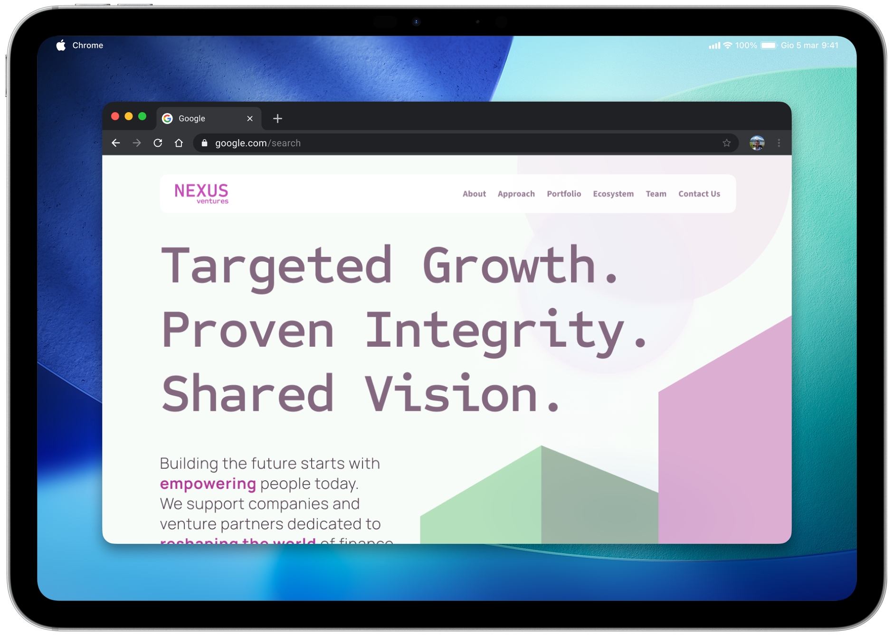
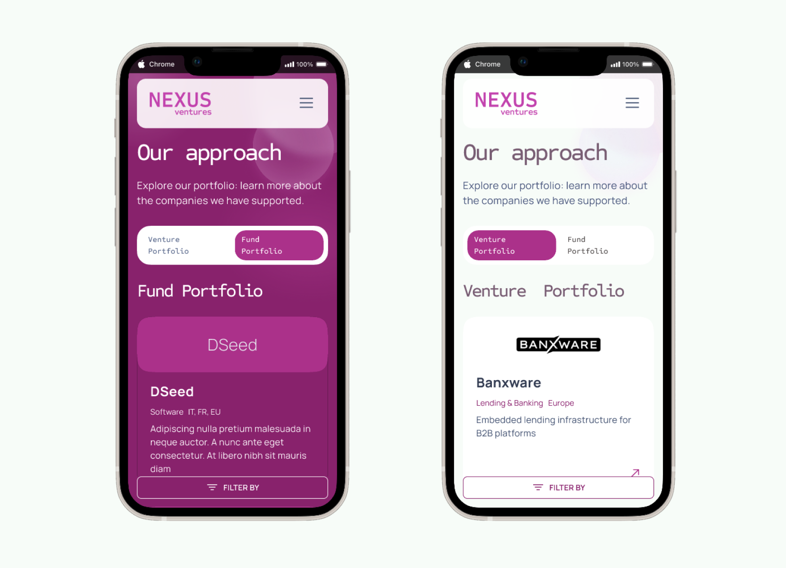
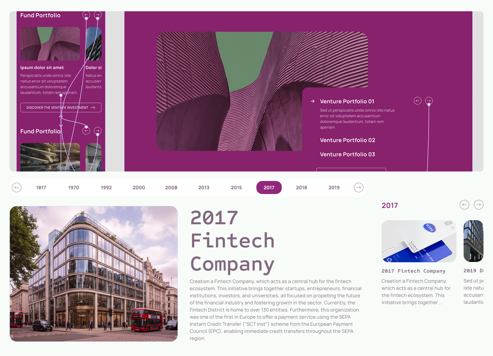
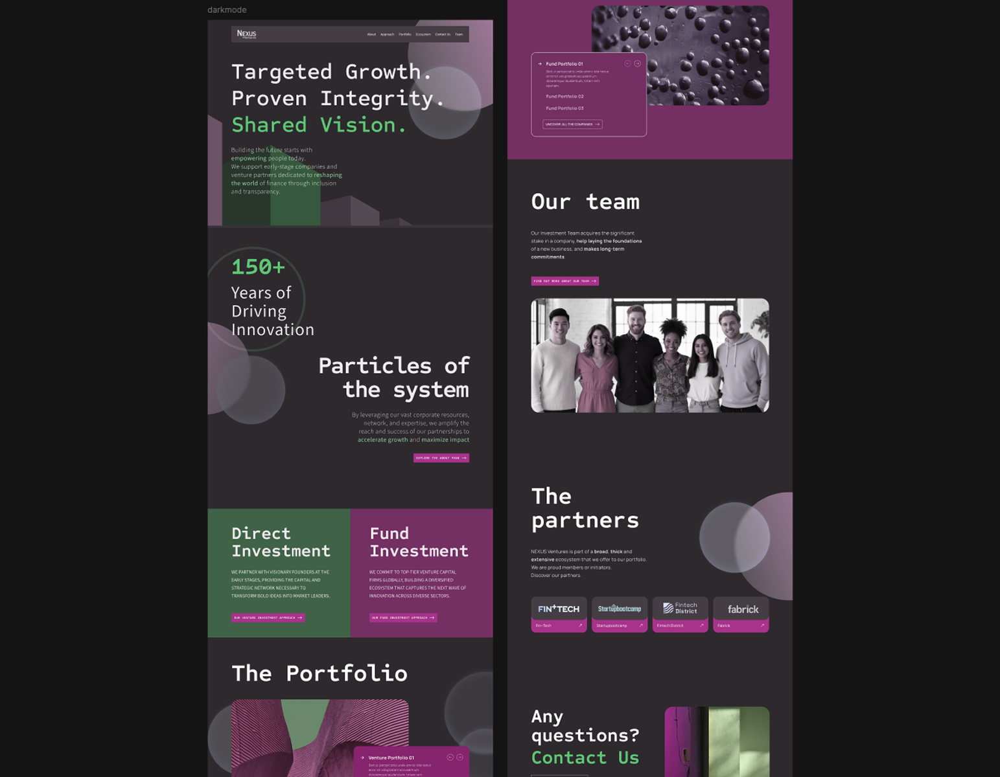

Nexus Ventures new website
Role: UX & UI Designer, prototyping & animations specialist
Scope: Analysis, Data visualisation research, Interface design

Context
In Spring 2025, I was tasked with designing the digital ecosystem for Nexus Ventures, the venture capital arm of Group Company (fictional names due to NDA restrictions). The challenge was to move beyond a traditional landing page and create a stunning portal, on the Liferay DXP platform. The primary objective was to translate the newborn brand identity of Nexus into a digital experience that balances institutional trust with cutting-edge aesthetics. My job was to fill the gap between strategic content and visual execution, ensuring that the portal didn't just provide information but actively engaged users through a clear, usable, and pleasing narrative.

Micro interactions and animations
We integrated minimal and impactful micro-interactions to engage the user. A key feature in our design is the fluid button animation: upon mouse hover or keyboard focus, the arrow icon moves in a smooth vertical scroll. It glides out of the button frame downwards and reappears from the top. We chose a smart animate effect in Figma to create a realistic effect, animating at 340ms. The aim was to provides instant feedback to the user, making the interface feel responsive, modern, and captivating.
The arrow motion was engineered in Figma using a nested frame containing two identical arrow icons, inserted with flow vertical. In the Default state, the secondary arrow is positioned below the button's boundary (hidden via clip content property). For the Hover state, the frame is shifted upward: the primary arrow translates out of view at the top, while the secondary arrow glides into its final position.

Value added
As a UX/UI and Animation Specialist, I steered the project toward a bold aesthetic, moving away from the "safe" institutional standards of the banking sector to embrace a disruptive visual language:
- High-impact UI design, using display titles, engaging visuals
- Animation and motion as feedback
- Clear and complete alternative texts
- Mobile-first strategy, and adaptive component design (see carousels)
- Realistic mockup and prototype on Figma
Snapshots & annotations

The main design hook is the engaging switch pattern: the bold Byzantium purple background alternates with the minimal white, facilitating content scanning and increasing users wonder.
The website is designed with responsiveness in mind, ensuring content remains usable across devices and screen sizes. All interactive elements clearly communicate their purpose and state through proper naming and, during the design handoff phase, we added comments for the developers to guide them in implementing semantic markup and ARIA attributes where needed.

The carousel component is fully accessible, supporting swipe gestures on mobile devices as well as keyboard and click interactions on desktop. It provides multiple control options, including navigation arrows and clearly labeled buttons, to accommodate different user preferences. We added the focus states to each interactive component (meeting WCAG criterion 1.4.11 - color contrast of at least 3:1 against the background) to ensure that keyboard users can easily identify which element is currently selected, and we clearly designed the states for the developers to implement.

At first, we created a more disruptive version of the UI, esploring alternatives to the main group brand kit, to give a fresh, modern look to the layout. After various iterations, we settled on a balanced approach - with light background - that maintains usability while introducing innovative elements and improved user experience.